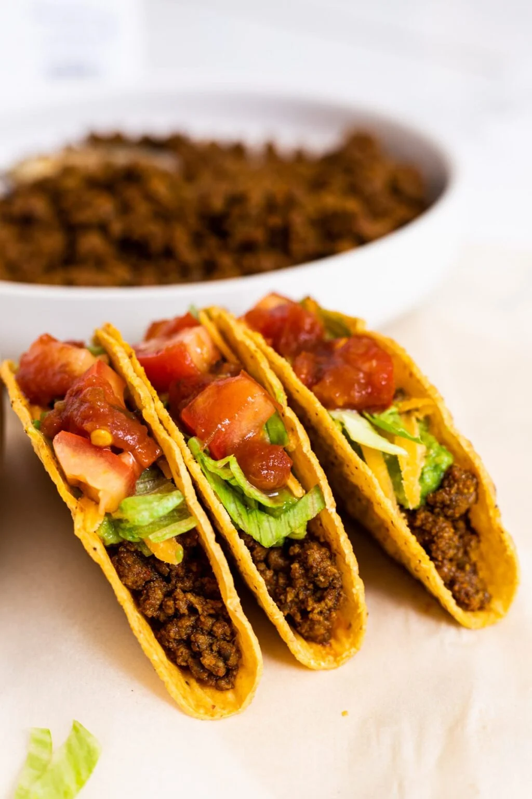

Beef
Description
Beef tacos - the old school way! A juicy beef filling stuffed in crispy taco shells. For the real old school experience, go with shredded iceberg lettuce, tomato and sour cream! I like to BAKE my shells with the taco meat and cheese for molten goodness, but this is optional. If you skip it, just bake the empty shells per packet directions. SCALE UP the seasonings and add vegetables to make the filling stretch further!<./p>
add somthing about the recipe add somthing about the recipe add somthing about the recipe add somthing about the recipeadd somthing about the recipeadd somthing about the recipeadd somthing about the recipeadd somthing about the recipeadd somthing about the recipeadd somthing about the recipeadd somthing about the recipeadd somthing about the recipeadd somthing about the recipeadd somthing about the recipeadd somthing about the recipe
Ingredients
- 10 to 12 crispy taco shells ("stand and stuff) OR soft tortillas of choice.
Instructions
- Preheat oven to 180C/350F.
- . Heat oil in a large skillet over high heat. Add garlic and onion - cook 2 minutes until golden.
- Add beef and cook for 2 minutes, breaking it up as you go, until it changes from red to light brown.
- Add Taco Seasonings and cook for 2 minutes until beef is cooked through.
- Add tomato paste and water. Cook for 1 minute or until water is evaporated and you're left with a juicy not not watery beef filling.
- Place taco shells in a baking pan (I can fit 10 in). Fill with taco meat, top with cheese.
- Slowly and gently pour sugar-butter mixture over lattice crust, making sure it seeps over sliced apples. Brush some onto lattice, but make sure it doesn't run off the sides.
- Bake 5 to 7 minutes until cheese is melted by which time the shells with be crispy.
- Serve tacos hot, straight out of the oven. Lay out toppings and sauces of choice on the table and let everyone assemble their own!
Nutrition Facts
Per serving: Calories: 490cal | Carbohydrates: 31g | Protein: 36g | Fat: 23g | Saturated Fat: 9g | Cholesterol: 99mg | Sodium: 998mg | Potassium: 755mg | Fiber: 4g | Sugar: 4g | Vitamin A: 630IU | Vitamin C: 6.8mg | Calcium: 212mg | Iron: 4.2mg